Typographic Experience
the first thought:
1-2 players;
80 cards;
30 minutes.

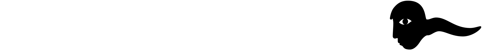
Prompted by the question “how typography can bridge the gap between how we consume words and how we feel them”, this project transforms a monologue transcript into a set of playing cards that offers an experience of the real-time formation of human thoughts. The seemingly aimless words are turned into a typographic narrative, with the cards forming randomly shaped paths each time they are played. On a micro level, the design prioritises readability through rigorous typesetting in a small format, informed by careful examination of the chosen typefaces.
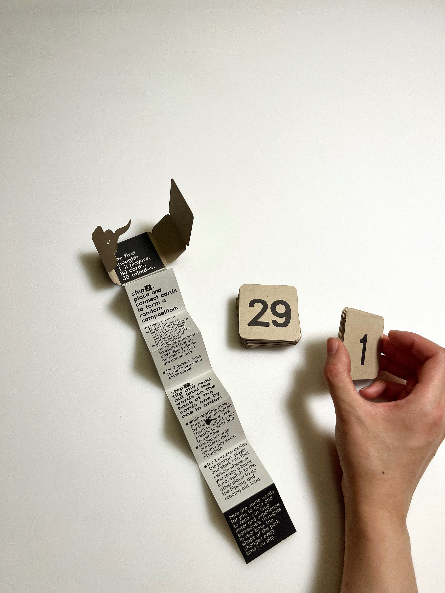
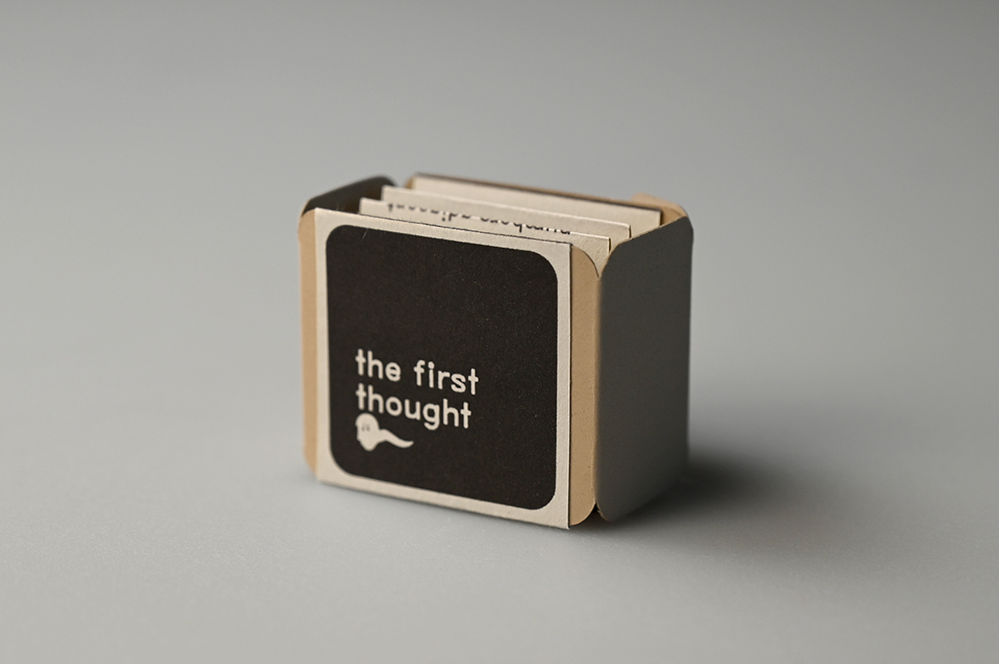
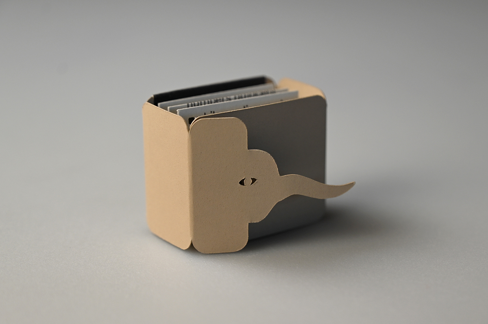
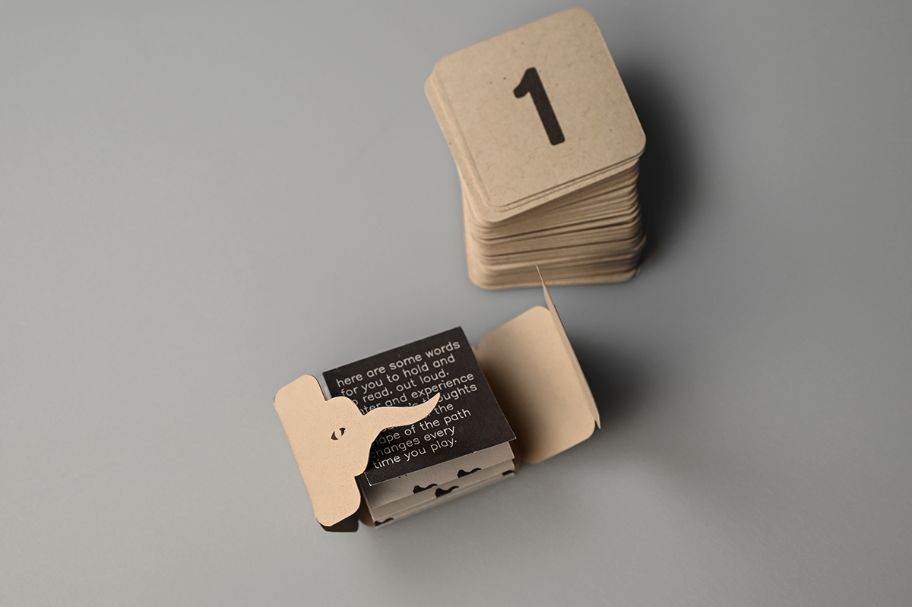
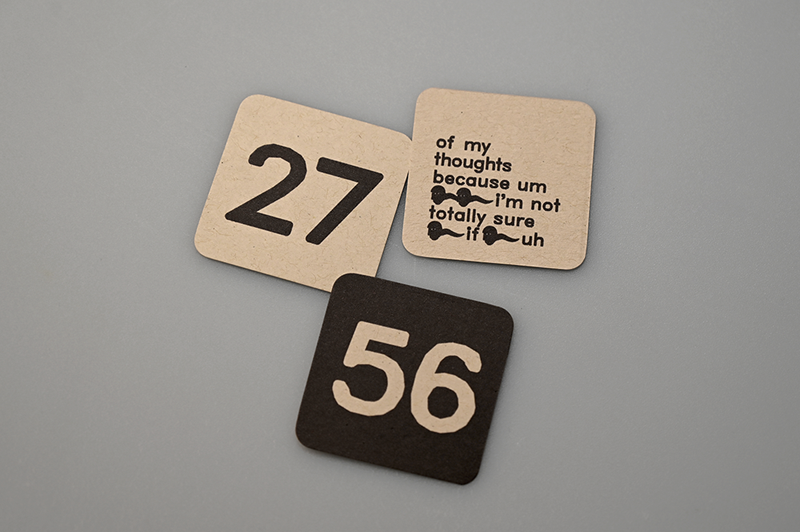
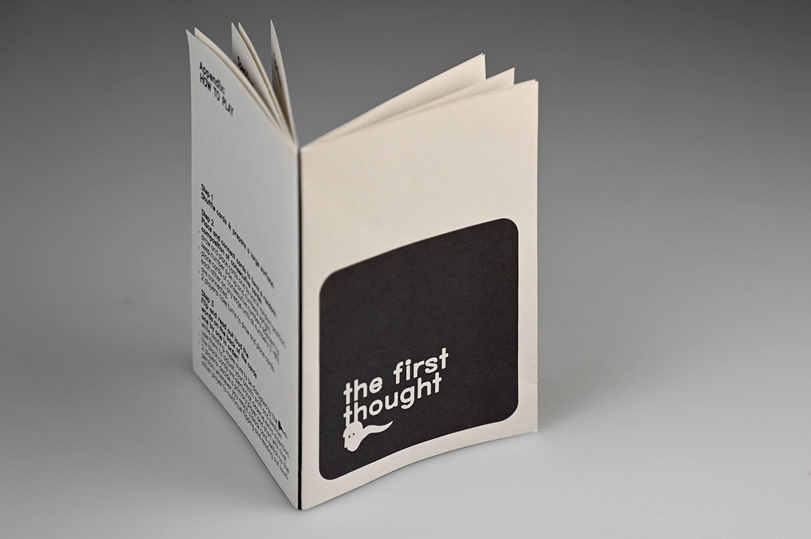
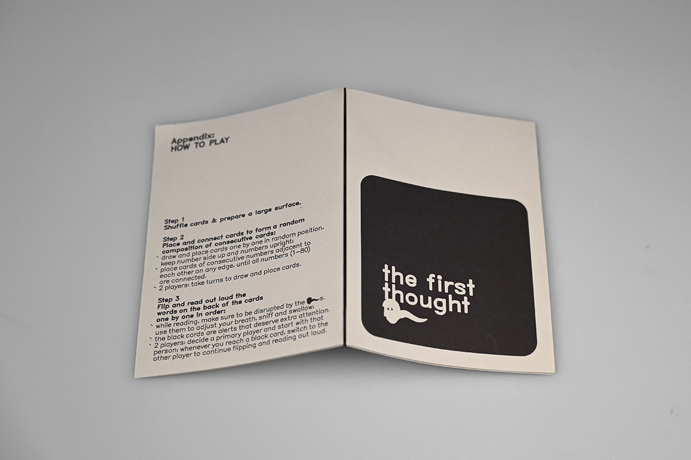
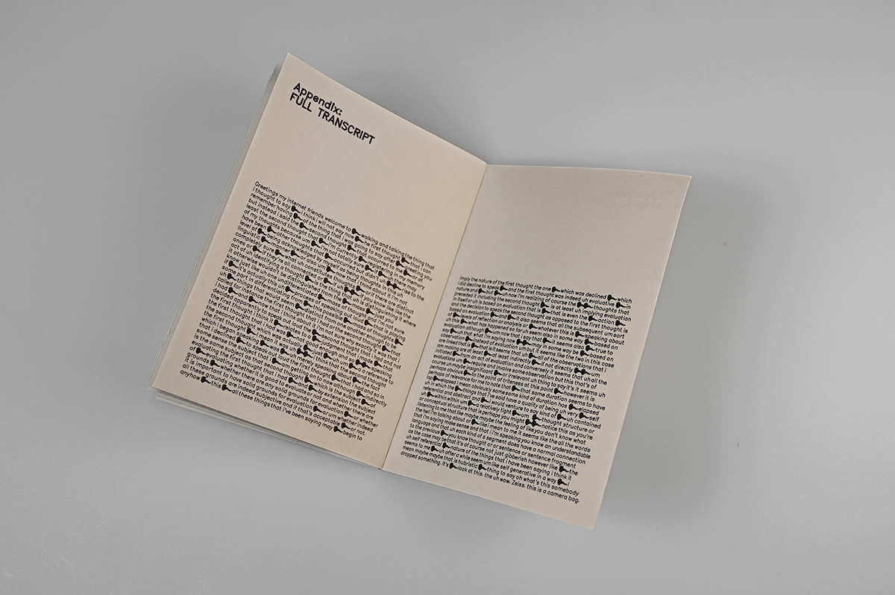
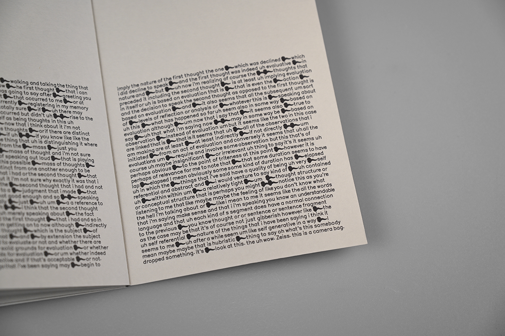
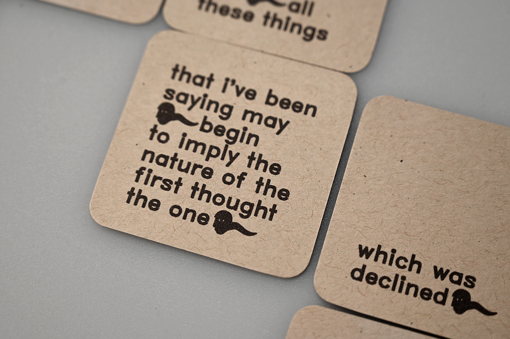
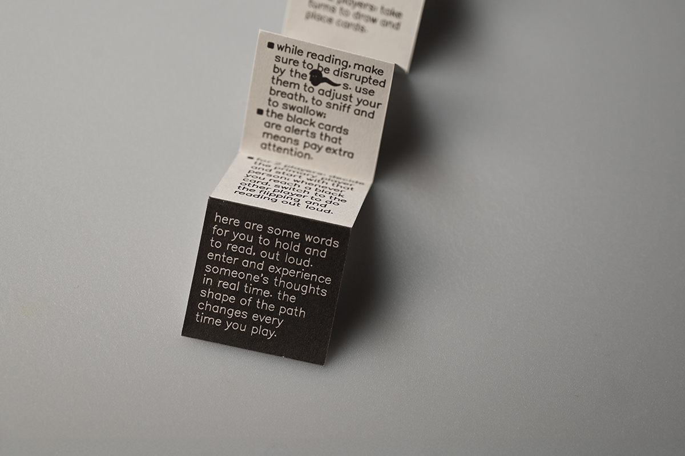
This project is for people who understand that the act of talking for talking's sake is actually someone reaching out. The project is situated in a post-pandemic world. The audience have been experiencing an unprecedented awareness of existential questions and hunger for human connection since covid. The project takes the text out of the internet context and presents it through a physical format. This also relates to AI anxiety. Working with human-generated words, this project addresses the similarities between human and AI, and also essential human qualities such as hesitation, stutters, rhythm and mistakes, all of which point to self-awareness.
To represent spoken language on paper, the two typefaces are the core of this project. Originally designed to be drawn by computers, Hershey-noailles carries both the sensibility of humanity and machine. Taking something for the screen into printed matter also mirrors the process of translating a digital transcript into physical form. Teranoptia is a series of mystery glyphs. With a strong resemblance to a sperm although with a grown man's head, the creature used in this project is an open, subliminal suggestion about swimming back to one's consciousness, which points to the reflective nature of the text.
Inspired by Fluxus, the transcript is treated as a score for interaction. Although self-referential and seemingly redundant, the monologue was broken down based on the subtle suspenses and incidents, including judgement, self-doubt, hesitation and sudden realisation, with the intention to guide participants gradually into the thoughts. It's also adjusted according to the reading rhythm, the overall flow of the experience and elements of humour. The layout structure responses to the act of walking and talking, with the cards forming a randomly shaped path every time it's played, showing a linear trajectory of the person's thought.
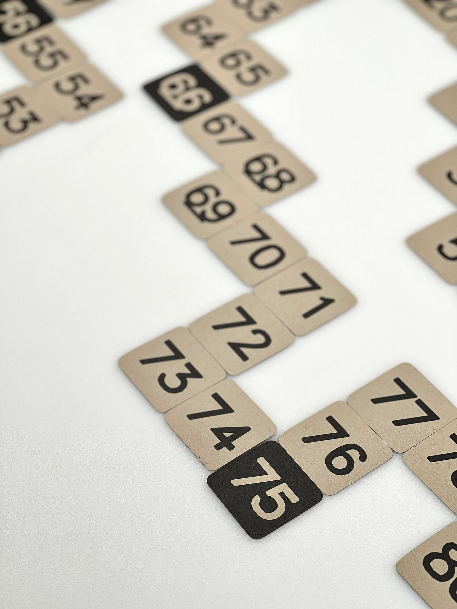